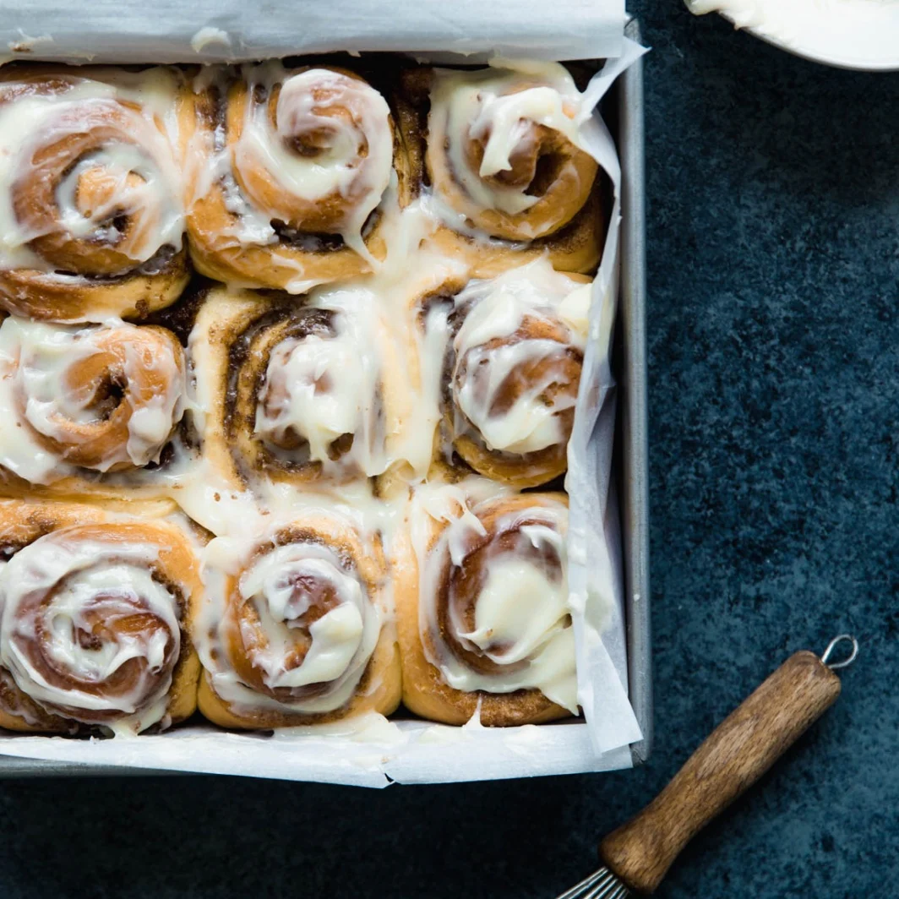

Cinnamon Rolls!
Go back to the home page!

Description:
This cinnamon roll recipe will leave you DROOLING. Baked to perfection, super soft and fluffy in the centre, crispy on the outside, topped with creme cheese perfection!
These cinnamon rolls will quickly become your (and everyone who tries it) favourite recipe ever, and is truly lovely heated up on cold days
Ingredients:
- 3/4 cup milk
- 9/4 teaspoons yeast
- 1/4 cup sugar
- 4 tablespoons butter
- 1 large egg + 1 egg yolk
- 3 cups bread flour
- 3/4 teaspooons salt
- 4 tablespoons butter
- 2/3 cup brown sugar
- 3/2 tablespoons cinnamon
Steps:
- Warm milk and add yeast
- Add sugar, melted butter, egg and yolk
- Mix in flour and knead dough
- Grease bowl and allow to rise for 30 mins
- Roll out
- Prepare filling with the butter, brown sugar and cinnamon
- Spread filling over rolled dough
- Roll the dough and cut
- Place rolls on tray
- Bake for an hour and enjoy!